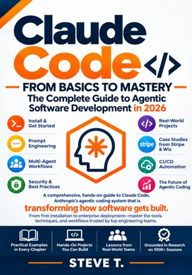

Claude Code: From Basics to Mastery
Claude Code: From Basics to Mastery by Steve Publications, as 7 daily lessons made from its free sample. Readers get the first 3 free, then pay to unlock the rest. Get the full book on Leanpub.
7 lessons, one a dayFirst 3 free, then $49
Day 1The engineer who no longer typesAbout this book: Claude Code is changing the way software gets built. Instead of just helping you write code, it can work through complex tasks, use tools, navigate …3.1 minDay 2Who this book is for, and the thesis behind itThis book assumes you have basic familiarity with software development: you know what a terminal is, you have written code in at least one language and you understand …4.2 minDay 3From autocomplete to agentsTo understand where Claude Code fits in the landscape, it helps to trace the evolution of AI-assisted coding over roughly five years. The progression has moved through four …5.1 minDay 4How the creator works, and who does whatThe best evidence for how Claude Code should be used comes from its creator. Boris Cherny, who previously worked at Meta where he was responsible for code quality …After purchase4.4 min
Day 5The 2026 landscape, and why nowClaude Code is not the only agentic coding tool available. The competitive landscape includes several notable players:After purchase3.1 min
Day 6Trade-offs: context, benchmarks and the real worldBefore diving into how to use Claude Code effectively, it is worth examining what agentic coding tools cannot do and where they introduce new risks beyond traditional development …After purchase2.9 min
Day 7Hallucination, security, limits and lock-inClaude Code can hallucinate in multi-step chains. A single step may produce correct output, but errors compound across a chain of ten or twenty steps. A file that …After purchase2.9 min
The free lessons, as readers get them
Day 2: Who this book is for, and the thesis behind it
Day 3: From autocomplete to agents
How this preview was made
Every lesson is an excerpt of Claude Code: From Basics to Mastery, copied from the PDF without edits. The only added words are each email's subject line, the short italic intro, the “Tomorrow” line and the invitation at the end of Day 3.
Left out
- Pages 1–7: Cover, copyright page and table of contents
- Pages 27–68: Chapters 2 to 19 and references, which this sample only includes in condensed form